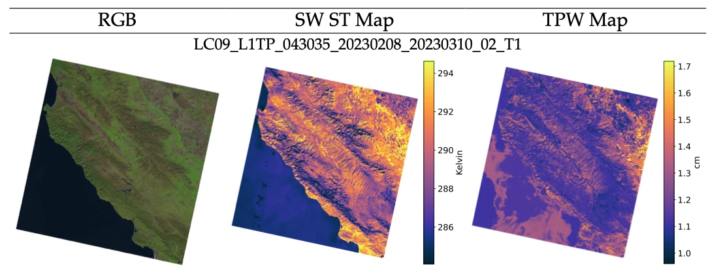

Satellite calibration & validation
Landsat Surface Temperature and Uncertainty
{kind=link}

Estimating atmospheric water vapor and propagating uncertainty in Landsat split-window surface-temperature products.
Main manuscript: Remote Sensing of Environment, in review.
Overview
For my Landsat Surface Temperature and Uncertainty research, I designed and implemented a supervised-learning pipeline to estimate atmospheric total precipitable water at each pixel from Landsat thermal bands 10 and 11, addressing the absence of dedicated water-vapor absorption bands. Using MODIS and AERONET observations as reference data, I combined feature engineering and feature selection with XGBoost to derive informative predictors and improve retrieval performance. Validation showed strong agreement with independent microwave radiometer measurements. I also incorporated water-vapor-dependent uncertainty into a split-window surface-temperature uncertainty framework through metrological uncertainty propagation, advancing the previous single-channel methodology. This work supports potential integration into Landsat Collection 3 surface-temperature processing. Alongside algorithm development and validation, I advised an undergraduate student who contributed to the project during their co-op.
A closer look
{kind=link}